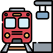
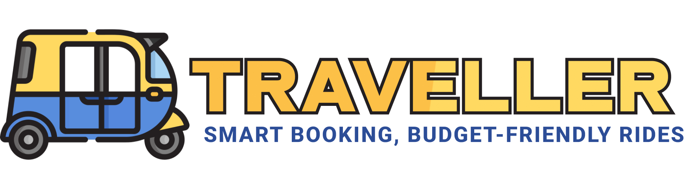
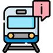
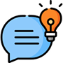
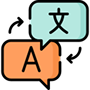

see tickets →
↓ scroll — the tuk-tuk up top follows you
Overview
Traveller is a mobile app designed to solve common travel issues faced by tourists navigating Sri Lanka. While existing ride hailing services work well for locals and short distance travel, they fall short for budget conscious tourists needing long distance, multi modal travel options and clear communication tools.
While ride hailing apps like Uber and PickMe exists in Sri Lanka, we designed this product specifically with the tourists in mind. Touching on their main pain points while preserving the familiarity of the more popular apps, Traveller was initiated with the one goal of “easing travel for Sri Lankan tourists”.
For localsShort rides workExisting apps already cover them.
For touristsLong, budget, multi-modalPlus clear ways to communicate.
The goal“easing travel for Sri Lankan tourists”Familiar patterns, tourist-first details.
Research
Key problems identified in the market research, and the solutions they led to. Tap a problem to see what answered it.
Key problems
Possible solutions

see routes →
see suggestions →
see chat →Nothing selected — all solutions shown.
Main user-flows
Five flows covering sign-up, booking and public transport. Pick one, click the diagram to zoom.
Designs
Walk through the main journeys screen by screen. The notes on the right are the decisions behind each step.
1 / 1
Future potential
By focusing on simplicity and the specific needs of tourists in Sri Lanka, Traveller carves out a distinct niche in the ride-hailing market. As we look to the future, there’s a clear path for growth—be it adapting to new destinations, introducing features like ride-sharing or vehicle rentals, or expanding into broader tourism services. Traveller’s journey is just beginning, and we’re eager to keep innovating to make travel easier and more enjoyable for everyone.